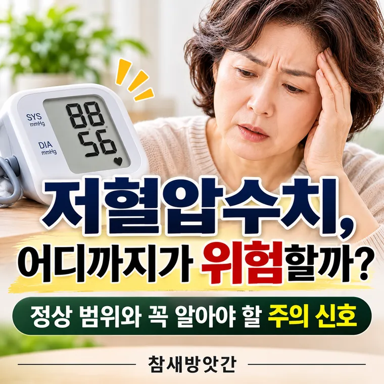

저혈압 수치 기준과 범위 총정리: 정상 혈압과 병원 방문이 필요한 순간
혈압을 쟀을 때 평소보다 숫자가 낮게 나오면 건강에 이상이 생긴 것은 아닌지 덜컥 겁이 나기 마련입니다. 특히 어지럼증이나 피로감이 동반될 때는 현재 내 수치가 정상 범위인지, 아니면 치료가 필요한 저혈압인지 정확히 알 필요가 있습니다.

이 글에서는 의학계에서 통용되는 저혈압 수치 기준과 정상 범위를 명확히 짚어드립니다. 또한, 일상에서 흔히 겪는 기립성 저혈압을 스스로 확인하는 측정법과 반드시 병원을 찾아야 하는 위험 신호까지 구체적으로 안내해 드립니다.
저혈압 수치 기준과 정상 범위는 어떻게 될까?
고혈압과 달리 저혈압은 의학 진료 지침에 절대적으로 고정된 단일 기준치가 존재하지 않습니다. 하지만 국내외 의학계와 질병관리청 국가건강정보포털에서는 통상적으로 수축기 혈압 90mmHg 미만 또는 이완기 혈압 60mmHg 미만일 때를 저혈압 수치 기준으로 봅니다.
통상적인 저혈압 수치 범위 (90/60mmHg 미만)
혈압계 화면에 찍히는 두 개의 숫자 중 위쪽 숫자인 수축기 혈압이 90mmHg보다 낮거나, 아래쪽 숫자인 이완기 혈압이 60mmHg보다 낮으면 저혈압 범위에 해당합니다. 두 수치 모두 기준치 아래로 떨어졌을 때는 물론이고, 둘 중 하나만 기준 미만이어도 저혈압으로 분류합니다.
정상 혈압은 수축기 120mmHg 미만, 이완기 80mmHg 미만을 의미합니다. 따라서 수축기 90~119mmHg, 이완기 60~79mmHg 사이는 건강한 정상 구간이며, 이 선 아래로 내려갈 때 저혈압 여부를 따져보게 됩니다.
| 구간 | 수축기(위) | 이완기(아래) |
|---|---|---|
| 저혈압 | 90 미만 | 또는 60 미만 |
| 정상 | 90~119 | 60~79 |
| 주의혈압 | 120~129 | 80 미만 |
| 고혈압 전단계부터 | 130 이상 | 또는 80 이상 |
수치가 낮아도 치료가 필요 없는 본태성 저혈압과 운동선수
혈압 수치가 90/60mmHg 미만으로 측정되었다고 해서 무조건 병적인 상태나 치료 대상이 되는 것은 아닙니다. 전체 인구의 약 1~2%는 특별한 원인 질환 없이 원래부터 혈압이 낮은 체질인 '본태성 저혈압'에 해당하며, 어지럼증이나 실신 같은 증상이 전혀 없다면 별도의 치료가 필요하지 않습니다.
마찬가지로 마라톤이나 수영 등 심폐 지구력 운동을 꾸준히 하는 운동선수도 일반인보다 심장 펌프 기능이 뛰어나 안정 시 수축기 혈압이 90mmHg 미만으로 나올 수 있습니다. 이러한 경우 역시 신체가 효율적으로 혈액을 순환시키고 있다는 신호일 뿐 건강 이상으로 보지 않습니다.
여성 저혈압 수치가 유독 낮게 측정되는 이유
실제 건강검진이나 일상 측정에서 남성보다 여성의 저혈압 수치가 상대적으로 낮게 나오는 경우가 흔합니다. 여성은 생리적인 특성상 남성보다 전체 혈액량이 적고 근육량이 적은 편이며, 매달 겪는 월경으로 인한 혈액 손실과 호르몬 변화가 혈관 긴장도에 영향을 주기 때문입니다.
특히 마른 체형의 젊은 여성은 수축기 혈압이 85~95mmHg 수준으로 유지되는 사례가 많습니다. 평소 일상생활에 지장이 없고 특별한 자각 증상이 없다면 과도하게 불안해하기보다 자신의 평소 기초 혈압 범위를 파악해 두는 것이 우선입니다.
앉았다 일어설 때 어지러운 기립성 저혈압 판단 기준
평소 가만히 있을 때 재는 혈압은 정상 범위인데, 누워 있거나 앉아 있다가 갑자기 일어설 때 눈앞이 캄캄해지고 어지럽다면 기립성 저혈압을 의심해야 합니다. 실제로 건강보험심사평가원 통계에 따르면 국내 기립성 저혈압 환자는 2018년 2만 840명에서 2022년 2만 4,661명으로 18.3% 증가하며 흔한 혈압 문제로 자리 잡았습니다.
기립성 저혈압의 의학적 수치 기준 (20/10mmHg 하락)
기립성 저혈압은 누운 자세에서 측정한 혈압과 일어선 뒤 측정한 혈압의 낙폭을 기준으로 진단합니다. 구체적으로 자리에서 일어선 뒤 3분 이내에 수축기 혈압이 20mmHg 이상 떨어지거나, 이완기 혈압이 10mmHg 이상 떨어지는 상태가 확인되면 기립성 저혈압으로 판정합니다.
우리 몸은 자세를 바꿀 때 중력에 의해 하체로 쏠리는 혈액을 자율신경계가 빠르게 조절해 뇌로 혈류를 보냅니다. 이 반사 작용이 일시적으로 지연되면서 뇌 혈류가 줄어들어 어지럼증이나 시야 흐림이 나타나는 것입니다.
정상인도 일어설 때 혈압이 떨어질 수 있는 이유
일어설 때 순간적으로 핑 도는 느낌이 든다고 해서 모두 기립성 저혈압 환자인 것은 아닙니다. 건강한 정상인 역시 누웠다 일어설 때는 중력의 영향으로 수축기 혈압이 10~15mmHg, 이완기 혈압이 5~10mmHg 정도 일시적으로 떨어질 수 있습니다.
따라서 일시적인 어지럼증만 가지고 스스로 기립성 저혈압이라고 단정 짓기보다는, 실제로 20/10mmHg 이상의 급격한 혈압 하락이 동반되는지 가정용 혈압계로 직접 확인해 보는 과정이 필요합니다.
내 혈압 상태 확인을 위한 실전 점검 및 병원 방문 기준
저혈압은 숫자 그 자체보다 그로 인해 나타나는 신체 증상과 혈압의 변화 추이가 훨씬 중요합니다. 지금 바로 가정용 혈압계와 혈압 계산기를 활용해 자신의 정확한 혈압 구간을 점검해 보시기 바랍니다.
지금 바로 해볼 수 있는 2단계 자가 점검법
가장 먼저 안정된 상태에서 측정한 나의 수축기·이완기 혈압을 혈압 계산기에 입력해 현재 수치가 정상 구간인지, 저혈압 구간(90/60mmHg 미만)에 속하는지 정확히 확인합니다.
두 번째로는 기립성 저혈압 여부를 확인하기 위해 자세별 혈압을 비교 측정합니다. 편안히 누운 상태로 5분간 안정을 취한 뒤 혈압을 한 번 재고, 자리에서 일어나 선 자세로 1분 후와 3분 후에 각각 혈압을 다시 측정해 수축기 20mmHg 이상 또는 이완기 10mmHg 이상 떨어지는지 비교해 봅니다.
· 누워서 5분 안정 → 혈압 1회 측정
· 일어서서 1분 후 → 혈압 측정
· 일어서서 3분 후 → 혈압 측정
· 누웠을 때보다 수축기 20 이상 또는 이완기 10 이상 떨어졌는지 비교
병원을 찾거나 즉시 응급실로 가야 하는 위험 신호
수축기 혈압이 90mmHg 미만이면서 어지럼증, 심한 피로감, 메스꺼움, 식은땀, 시야 흐림 같은 증상이 동반된다면 반드시 내과나 순환기내과 전문의의 진료를 받아야 합니다.
특히 주의해야 할 상황은 혈압이 점점 낮아지는 추세를 보일 때입니다. 현재 혈압 수치가 90mmHg 이상으로 나오더라도 시간이 지날수록 수치가 계속 떨어지고 의식이 흐려지거나 호흡곤란, 가슴 통증이 나타난다면 쇼크의 전조 증상일 수 있으므로 지체 없이 응급실로 이동해야 합니다.
혈압 관리 시 주의사항과 전문의 상담의 중요성
저혈압이 걱정된다는 이유로 임의로 염분 섭취를 과도하게 늘리거나 검증되지 않은 민간요법에 의존하는 것은 오히려 심장과 신장에 부담을 줄 수 있어 피해야 합니다.
또한 현재 고혈압 약이나 전립선비대증 약, 이뇨제 등을 복용 중이라면 약물 부작용으로 저혈압이 나타날 수 있습니다. 복용 중인 약의 용량을 줄이거나 중단하는 결정은 반드시 담당 의사의 진단을 통해 조절해야 하는 영역이므로 임의로 약을 끊지 말고 전문의와 상의하시기 바랍니다.
자주 묻는 질문
Q1. 수축기 혈압은 95mmHg인데 이완기 혈압만 55mmHg로 낮게 나옵니다. 이것도 저혈압인가요?
네, 저혈압 범위에 해당합니다. 통상적으로 수축기 혈압 90mmHg 미만 또는 이완기 혈압 60mmHg 미만 중 어느 한쪽이라도 기준치 아래로 떨어지면 저혈압으로 분류합니다. 다만 동반되는 어지럼증이나 무기력증 같은 증상이 전혀 없다면 즉각적인 치료 대상은 아니므로 주기적으로 수치를 관찰하시면 됩니다.
Q2. 저혈압 수치가 나왔을 때 집에서 할 수 있는 안전한 대처법은 무엇인가요?
탈수는 혈액량을 줄여 혈압을 더 떨어뜨리므로 평소 물을 충분히 마셔 수분을 보충하는 것이 가장 기본적이고 안전합니다. 누워 있거나 앉아 있다가 일어날 때는 한 번에 벌떡 일어나지 말고, 침대 걸터앉아 10~20초 정도 숨을 고른 뒤 천천히 일어나는 습관을 들이면 기립성 어지럼증을 예방할 수 있습니다.
Q3. 20~30대 젊은 여성에게 저혈압 수치가 자주 나타나는 이유는 무엇인가요?
젊은 여성은 남성보다 체격이 작고 근육량과 전체 혈액량이 적은 데다, 정기적인 월경과 다이어트 등으로 인해 기초 혈압 자체가 낮게 형성되는 경우가 많습니다. 평소 85/55mmHg 내외의 수치를 보이더라도 일상생활에 불편함이 없다면 체질적인 본태성 저혈압일 가능성이 높습니다.
이 글의 설명은 2026년 11월 기준 일반적인 건강 정보입니다. 기준이 바뀌거나 몸 상태에 따라 달라질 수 있으니 참고용으로만 읽고, 증상이 있으면 의료진과 상담하세요. 진단과 약은 의사의 영역입니다.